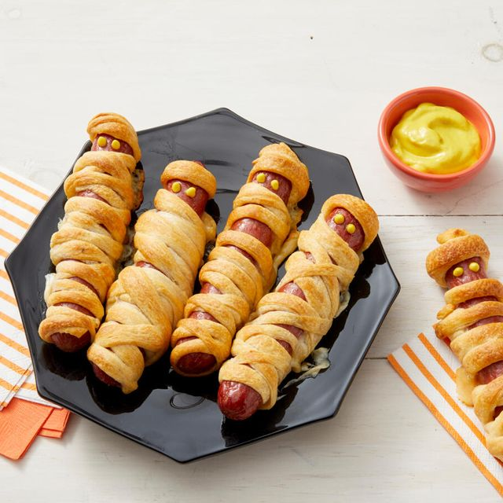

Spooky Mummy Dogs

YOWZA!! Oh wait, they aren't real mummies. Phew!
-- Ingredients --
Make sure not to go shopping for these items while you're hungry. Trust me, you end up with a whole 'nother grocery cart of stuff you dont need
- 8 hot dogs
- 1 (8 ounce) package refrigerated crescent rolls -(Pillsbury is my go-to)
- 1 teaspoon yellow mustard -(or more, whatever wraps your mummy)
-- Directions --
Now that we've got all of the ingredients, let's bring these mummies to life!
- Preheat oven to 350 degrees F (175 degrees C)
- Place hot dogs in a saucepan and cover with water; bring to a boil. Reduce heat to medium-low and simmer until warmed through(about 5 minutes). Drain
-- (Or you can keep the hot dog water if you want it for any other culinary endeavors) --
- Roll crescent dough onto a work surface; tear into 8 pieces. Roll 1 piece dough around each hot dog, creating the look of the mummy. Place dots of mustard at the top for eyes(+ nose and mouth if feeling creative) Arrange hot dogs on a baking sheet
- Pop those bad-boys in the preheated oven until crescent dough is golden brown and flaky(about 10 minutes)
- Plop it on a plate, wait a little bit, and dig into those dogs!
If you enjoyed it, post a picture of it on Instagram with #spookymumdog
Click here to see some more delicious treats